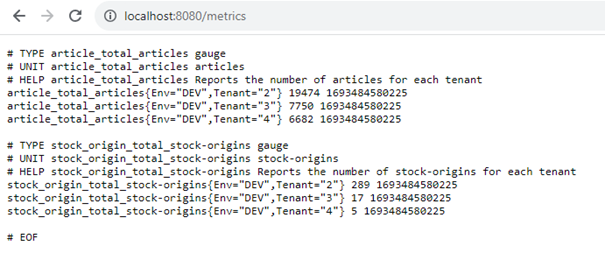

Présentation du module
Généralités
Le module Delivery Optimizer (DO) intervient dans le cadre du commerce unifié et permet aux origines de stocks (magasins, fournisseurs, stock propre, etc..) participantes des différents canaux d'expédier des articles aux clients finaux depuis leurs stocks. Ceci permet de disposer de stocks totaux plus importants ainsi que des possibilités d'expéditions plus intéressantes.
De cette façon, Delivery Optimizer permet par exemple d'expédier une partie d'une commande depuis un entrepôt et une autre depuis un ou plusieurs magasins. Le but étant de minimiser le nombre d'envois tout en répondant à d'autres critères tel que minimiser la distance entre les expéditeurs et le client.
Pour chaque canal de vente, le module permet de :
- Gérer les articles et leurs disponibilités à la vente
- Gérer et paramétrer les origines de stocks
- Gérer les commandes et paniers
- Obtenir le détail des disponibilités d'un article ainsi que la quantité maximum commandable
- Obtenir la répartition optimale d'un panier/d'une commande à affecter aux différentes origines de stocks
Le module se présente sous forme d’un serveur API à déployer dans votre solution et à appeler par les autres composants de votre système d'information (canaux de ventes, système de gestion de commande, etc..).
Il a vocation à s'intégrer dans le reste de la solution Altazion de cette façon :

Notion de d'origines de stocks (StockOrigins)
Les origines de stocks regroupent l'ensemble des entités pouvant participer à l'expédition de toute ou partie d'une commande. Parmis ses entités on retrouve entre autres :
- Des magasins
- Des entrepots
- Des fournisseurs
Les origines de stocks sont identifiées par un code qui doit être unique. Altazion utilise la syntax suivante pour les codes :
"{codePays}:{typeDeStockOrigin}:{identifiantStockOrigin}"
Par exemple, pour un magasin belge ayant pour identifiant "0265", le code généré sera : "BEL:MAG:0265". Le code d'un fournisseur français ayant pour identifiant "Evian" sera : "FRA:FRN:EVIAN"
Système de log et contrôle de la verbosité
Le module DO dispose d’un système complet de log utilisant Datadog, un service de surveillance d’infrastructure qui est hébergé dans le cloud.
Pour le configurer vous aurez besoin de fournir les variables d’environnements suivantes :
- DATADOG_SERVER, qui contient l’url vers votre serveur datadog
- DATADOG_KEY, qui est la clef d’accès à votre serveur
- DATADOG_TAGS (optionnel), qui contient les tags séparés par des virgules.
L’intégralité des logs est affichée dans la console du module.
Stockage des données
Stockage des données chaudes dans REDIS
L'intégralité des données est stockée dans un cache REDIS en version 6.0 ou supérieure permettant au module de proposer une réactivité en temps réel et des performances accrues par rapport à un stockage traditionnel en base de données. Afin d'éviter d'éventuelles pertes de données, ces données sont régulièrement synchronisé avec une base MongoDB.
Stockage des données froides dans MongoDB
Le module est prévu pour fonctionner avec une base de données Mongo en version 4.2 ou supérieure compatible avec les notions de replica sets et de sharded clusters. Cette base permet de garder une trâce durable des données ainsi que de réhydrater le cache REDIS en cas d'arrêt de ce dernier.
Connexion aux bases
La connexion à la base Mongo et au cache REDIS se fait grâce aux deux variables d’environnement suivantes :
- AZURE_APPCONFIG correspondant l’adresse du Azure App Configuration qui contient les connection strings des bases de données.
- AZURE_APPCONFIG_ENV qui contient l’environnement duquel récupérer la clef (DEV, PRODUCTION, etc…).
Déploiement
Le module Altazion Delivery Optimizer est distribué sous forme d’un container Docker et peut ainsi être déployé facilement sur tous les environnements compatibles. Il expose le port 8080 par défaut. Pour vérifier son bon déploiement il est possible de se rendre sur l’URL du module qui devrait renvoyer la page suivante.

À partir de là, il est possible de cliquer sur les boutons de la section « Tools » afin de se rendre sur les pages correspondantes.
Swagger
Le serveur API exporte un swagger respectant la norme OpenAPI 3.0.1 à l’adresse "/swagger/v1/swagger.json"
Il dispose également d'une interface web SwaggerUI permettant de facilement tester les points API disponibles ainsi que de consulter le détail des objets en entrée/sortie. Cette interface est disponible à l’adresse "/swagger". Enfin permet également de consulter le détail, les définitions et la structure de tous les objets que vous pourriez être amené à manipuler en utilisant le module.

Metrics via OpenTelemetry et Prometheus
OpenTelemetry est un standard d'APIs, de SDK et d'outils permettant la collecte et l'export de données de télémétries. Ces données sont exportées via Prometheus, un logiciel libre de surveillance informatique (monitoring) et sont accessibles à l'adresse "/metrics" du module.

Ces metrics sont observées afin d'obtenir des informations sur l'état et les performances de la base et du module et peuvent être lues par un logiciel d'affichage de metrics tel que Grafana.
Actuellement, le module remonte les statistiques suivantes :
- L'évolution du nombre de StockOrigins en base ("stock-origin.total")
- L'évolution du nombre d'Articles en base ("article.total")
- Le nombre total d'interrogations de calcul de disponibilité article ("stock.api_request_counter")
- Le nombre d'interrogations de calcul de disponibilité article avec un stock > 0 ("stock.available_counter")
- Le nombre d'interrogations de calcul de disponibilité article avec un stock <= 0 ("stock.unavailable_counter")
- Un histogramme sur le temps d'exécution du calcul de stock ("stock.api_request_duration")
- Le nombre total d'appel au point api de calcul de la répartition d'un panier ("cart.api_request_counter")
- Le nombre d’interrogations de calcul de la répartition d'un panier résultant à une répartition possible ("cart.distribution_found_counter")
- Le nombre d’interrogations de calcul de la répartition d'un panier sans répartition possible ("cart.distribution_not_found_counter")
- Un histogramme sur le temps d'exécution du calcul de répartition d'un panier ("cart.api_request_duration")
- Le nombre de paniers comportant du stock ignoré dans un StockOrigin car un autre panier l'a reservé.